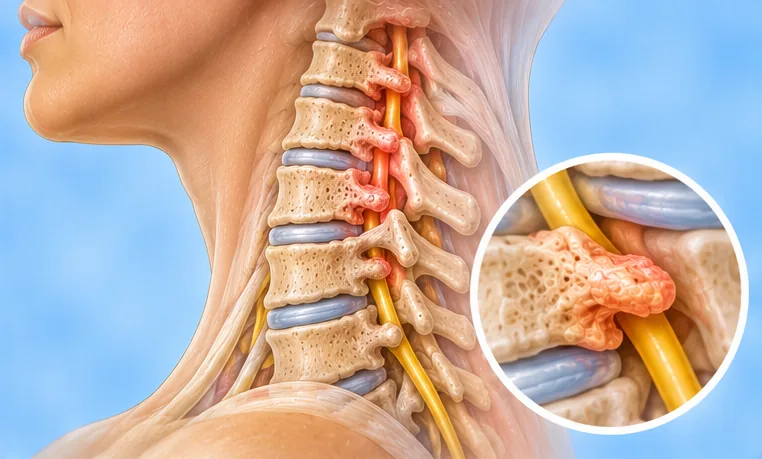

颈椎变形
颈部骨骼的形状或排列发生改变，常与劳损或长期受力有关
这是什么
颈部骨骼不再保持原来柔和的弧度，或形状发生了变化。可能引起颈部僵硬、疼痛，有时手臂会发麻。
- 颈部骨骼
- 年纪越大越常见
- 颈部僵硬酸痛
- 就诊科室
- 家庭医生、骨科或脊柱科医生
- 多发人群
- 中老年人；长时间伏案或看手机的人
- 传染性
- 不传染
- 病程
- 常在数年里缓慢变化；许多人在适当照护下能应付得很好
常见表现

颈部僵硬酸痛颈痛 
转头不灵活颈部活动受限 
手臂发麻上肢感觉异常 
手发麻刺痛感觉异常（麻刺感） 
后脑勺头痛枕部头痛
为什么会这样

年龄增长衰老 
受伤或跌倒外伤
其他原因
- 长时间低头，如看手机和电脑
- 某些关节疾病，或天生颈部形状不同
出现这些情况请先看医生
- 手臂或腿无力、面部下垂或说话困难：拨打999
- 跌倒、事故或撞击后颈痛：立即去医院
- 大小便失控，或走路困难
- 双手麻木笨拙，或手臂疼痛不断加重
- 剧烈头痛并伴有发烧和颈部僵硬
如果有以上情况，请先看医生，再来做调理。
本页只是一般性的健康资讯。请继续按时服用平常的药物，并继续看医生。
请继续日常治疗
请继续按医嘱服药，并按时复诊。我们的调理是温和的辅助，不能代替医疗。
日常护理
避免提重物避免用力 
咨询药剂师药剂师建议
更多自我照顾的方法
- 屏幕与视线平齐，并经常休息
- 用能让颈部保持自然位置的枕头
- 做缓慢、轻柔且不引起疼痛的颈部活动
告诉理疗师
- 最近颈部受伤或手术
- 手臂发麻刺痛
- 转头时头晕
- 骨质疏松
- 心脏起搏器或金属植入物
- 服用抗凝药
调理师会在开始前和你确认这一项。
相关疾病
参考资料: General information based on public health sources such as Mayo Clinic, NHS, Cleveland Clinic and NCBI StatPearls.
页面更新: 2026-10-31